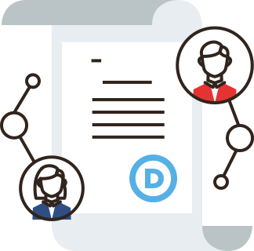
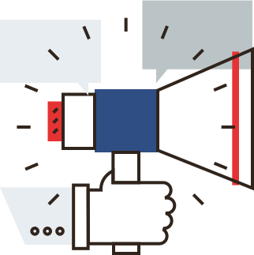
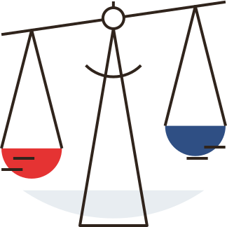
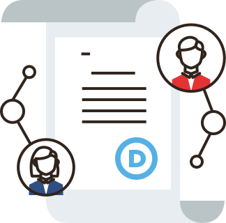
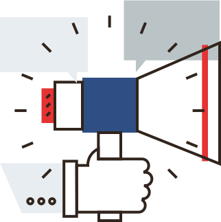
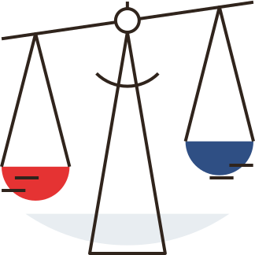

The DNC:
 Establishes our unified party platform.
 Recruits and helps elect candidates.
 Administers the Presidential nomination process.
On February 26th, just 447 people will decide the next chair of the Democratic National Committee.
Why is the DNC important?
 Establishes our unified party platform.
 Recruits and helps elect candidates.
 Administers the Presidential nomination process.
Not only did it fail on November 8th,
but while 43% of new voters identify as Democrats
compared to 29% for Republicans,
the Democratic Party is losing seats at the federal, state, and local levels.
Let's make sure that on February 26th, it's not just 447 voices that select our next leader, but the 72 million voices of the Democratic Party.